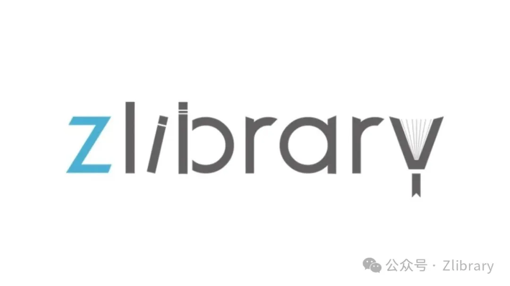
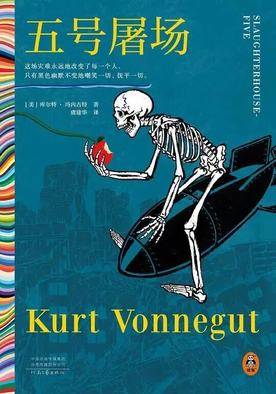
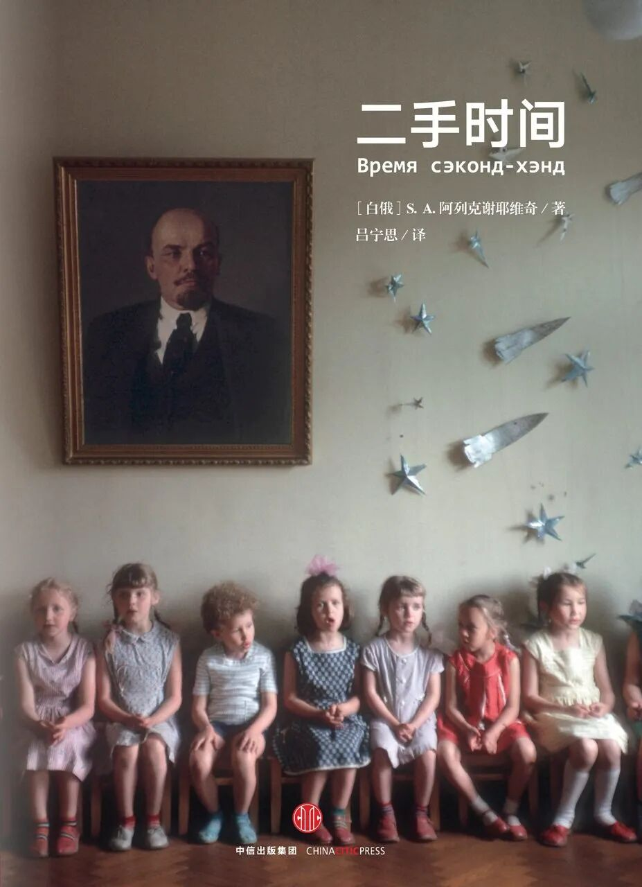
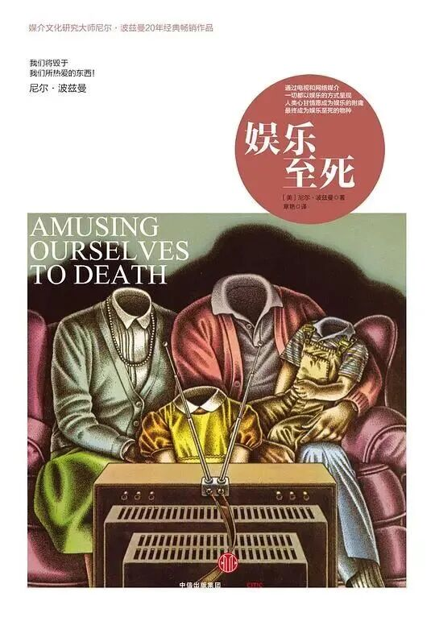

五号屠场
[美] 库尔特·冯内古特
豆瓣评分：8.5

冯内古特写这本书，前前后后耗费了二十五年。中间写废掉的手稿，据人说少说也有五千页上下。1945年2月，盟军对德累斯顿展开了地毯式轰炸，一整座城市一夜之间烧成了灰烬。死了十三万人。冯内古特当时人就在那里——他是美军战俘，和另外六个人一起被关在屠宰场的地下冷库里。那座冷库的编号，巧得很，正是“五号”。凭借着这个编号，他捡回了一条命。
要是换作别人来写，大概率会弄出一本血泪交加的战争回忆录。冯内古特偏不这么干。他让一个叫比利·皮尔格林的主角被外星人绑走，由此获得了一种能在时间线上随意穿梭的本事。童年、战场、新婚当夜、临死之前——这些碎片并非比利自己拣选的，而是时间把他如同一个包裹那样扔来扔去。于是德累斯顿那场轰炸就变成了一件十分怪异的事物：它既不是“过去”，也谈不上是“记忆”，它就卡在那儿，恰似喉咙里的一根鱼刺。吞不下去，咳不出来。
这本书问世以后在美国好几个州被禁过。禁它的那些说辞，现在回过头去看都相当滑稽——性描写太多、反战的意思太露骨了、对美军士兵的形象不够正面。冯内古特听了，肩膀一耸，回了一句大意是“德累斯顿本来就不该挨炸”的话。六十年过去了，当年禁它的那些理由现在读起来跟冷笑话差不多。书倒还活得挺好。说真的，关于战争的书有人陆陆续续翻过不少，不过这一本让人一边看一边弄不清是该笑出声还是该把书合上缓一缓。找不出第二本这样的。
二手时间
[白俄] S.A. 阿列克谢耶维奇
豆瓣评分：8.9

阿列克谢耶维奇2015年拿到诺贝尔文学奖，算是实至名归。《二手时间》是她全部作品里最沉的一部。她干的事情听上去并不复杂——拿一支录音笔、一个笔记本，花了二十年的时间走遍苏联解体之后的废墟，去找那些在历史课本上永远不可能出现的人。工人，打扫卫生的清洁工，退了休的老党员，还有年轻时信仰过共产主义后来又死活动摇了的那些知识分子。把从他们嘴里那些零零碎碎的东西给拼凑到一起，就构成了一幅后苏联时代的完整图画。这里既没有旁白，也没有解说词，全都是他们自己在讲述。
书中有一句话，在读完以后的好几天里都一直在脑海里盘旋着：“没有人教育过我们什么是自由，我们只被教育过怎样为自由而牺牲。”就这一句话，差不多就能够撑起整本书百分之八十的分量了。从1991年到2012年，整整二十年的时间。一代人的信仰、梦想、日常生活、做人的那点尊严，都跟着国家一同碎掉了。然后有人跑过来通知他们：好了，从今天起你们自由了。可问题是自由这个东西攥在手里要怎么去运用？并没有人教过。于是他们只好揣着上一代人用剩下的“时间”，去应付一种自己完全不熟悉的日子。“二手时间”这个书名，其缘由也正在于此。
这本书在某些地方不太好买到，政治方面的缘由，即使不说大家也都明白。不过它真正让人放不下的地方，倒不完全是在于那些敏感的内容。而是它做了一件事，特别朴素：它把话筒从专家手里取走，交到了那些你每天在街上遇到也不会多看一眼的普通人手里，让他们坐下来，慢慢地进行讲述。讲着讲着你就会觉得，所谓的历史，很有可能是两堆东西——一堆属于被人挑拣出来的，另一堆则是被人丢弃掉的。而这本书，就是把那些被丢弃的那一堆，重新给捡回来了一些。
娱乐至死
[美] 尼尔·波兹曼
豆瓣评分：8.5

波兹曼写这本是1985年。他那时盯住的对象，是电视。那个方头方脑的大盒子，正忙着把政治、宗教、新闻、教育，一股脑儿全搅成娱乐节目。四十年之后你回过头再去瞧，会发现他当年担惊受怕的那些事，不光一样没少，反倒以一种比他预想中更加彻底的方式落了地。如今每个人裤兜里都揣着一块比电视小得多也快得多的屏幕，波兹曼当年那番警告，搁到现在，简直要命。
整本书绕来绕去就问一个问题：你所运用的媒介，究竟在多大程度上替你决定了你能想到什么、以及你能怎样去想？波兹曼摆了两种糟糕的结局在桌面上。奥威尔式的那种，文化最后变成一座监狱。赫胥黎所描述的那一种情形：文化转变成了一场由所有人自愿参加的巨型滑稽表演。他所给出的这个判断，人们听完之后心里头不太舒坦：我们现在所走的，正是后头那条路。并不是有谁拿手来堵住你的嘴，而是你主动把嘴张开，急急忙忙地朝里填塞那些源源不断的娱乐饲料，间或还会打个嗝，觉得这东西的味道居然还挺不错。
这本书当年倒是没有被任何一家官方机构正式查禁过。不过，被它惹恼的人，数量绝对不少。电视台的高管们感觉自己遭到了冒犯，广告商们觉得自己被劈头盖脸地骂了，就连相当多的普通观众也不怎么买账——有谁乐意被别人当面告知“你所看的那些内容，正让你逐渐变得迟钝”？若是把它放到如今这个短视频漫天飞舞、算法紧紧追在后头向你投喂、注意力被切割得比薯片还碎的年代里，重新翻开这本将近四十年前出版的老书，会有那么一阵子，后背突然感到一阵凉意——他在当年笔端所描绘的那个“美丽新世界”，此时此刻，正悄无声息地在你的手机里运转着。这书并不是那种能够让人放松心神的读物。不过你倒是可以选一个晚上，把手机翻转过来扣到床头柜上，翻开这本书读上三四十页，然后多半会开始琢磨这样一个问题：你上一次一气呵成地读完一篇超过三千字的内容，是多久以前的事情了？
三本书，代表了三种被压制的姿态。冯内古特给战争的真相裹上了一层荒诞的糖衣，然后把它喂到你的嘴里。阿列克谢耶维奇则是把话筒从讲台上拔下来，塞到那些从来没有人问过他们“你自己怎么看”的人们手中。而波兹曼操起一把冰冷的手术刀，将媒介那层表皮一层又一层地切开，展示给你看。它们都曾让那个时代的人们坐立难安。说实在的，能够让一整个时代感到坐立难安——这，或许正是一本好书最体面的活法了。挑上一本吧。有些书，读完以后，你仍然是原先的那个你；而有些书，就不是了。